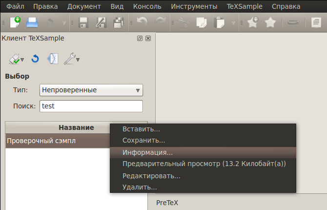
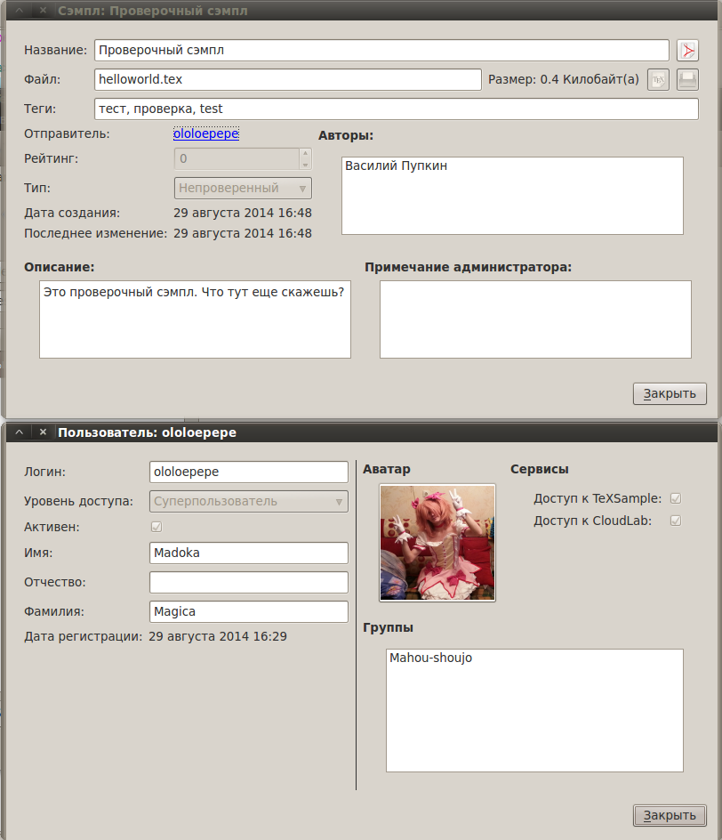
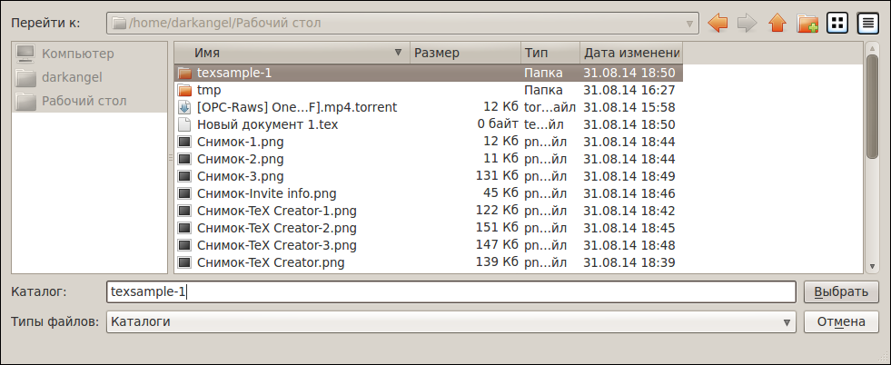
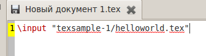
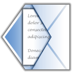
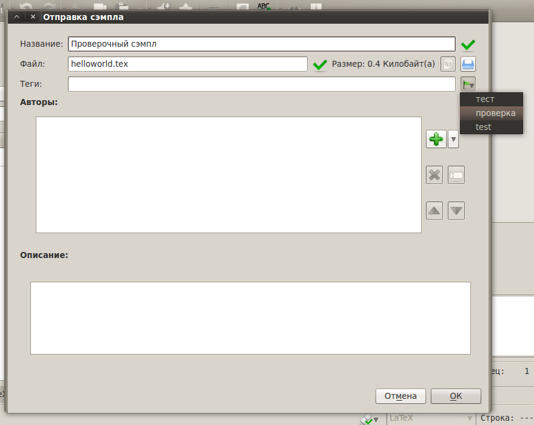
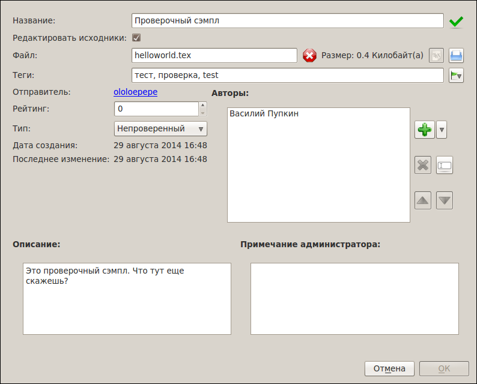

[Назад: 4.3. Администрирование]
Сэмплы
Поиск сэмплов
Прежде всего, следует отметить, что существуют сэмплы трех типов: Утвержденные, Отвергнутые и
Непроверенные. В категорию непроверенных сэмплы попадают автоматически при добавлении их в базу. Затем, после
проверки модератором, сэмпл может быть помечен как отвергнутый (не прошедший проверку), либо утвержденный (одобренный к
использованию).
В окне TeXSample при поиске сэмплов имеется возможность выбрать один из этих типов. Также есть специальная категория
Мои, содержащая все сэмплы любых типов, отправленные текущим пользователем (то есть вами).
Для поиска также используются ключевые слова, вводимые в поле Поиск. Ключевые слова разделяются запятыми
(допускаются пробелы после запятых). Поиск осуществляется по названию сэмпла, логину отправителя, имени, фамилии и
отчеству авторов, а также по тегам (ключевым словам), присвоенным сэмплу. Просто введите ключевые слова в поле
Поиск, и из всего множества сэмплов будут показаны лишь те, в которых присутствует хотя бы одно из введенных
ключевых слов.

Имеется возможность вызвать контекстное меню для каждого сэмпла в списке (щелчок правой кнопкой по названию или
соответствующая кнопка на клавиатуре). Сэмпл можно сохранить, вставить в текущий документ, или редактировать/удалить
(если вы администратор, либо если это ваш сэмпл). Также можно скачать и открыть в
программе для просмотра PDF превью
(файл предварительного просмотра) данного сэмпла, либо посмотреть информацию о нем, выбрав соответствующие пункты. В
диалоге информации о сэмпле можно также посмотреть информацию об отправителе, щелкнув на его логин.

Когда кто-то добавляет новый сэмпл, список не обновляется автоматически. Чтобы обновить список сэмплов,
воспользуйтесь пунктом Обновить меню TeXSample, либо нажмите соответствующую кнопку на окне TeXSample:

Вставка/сохранение сэмплов
Вставить сэмпл в текущий документ можно, выбрав соответсвующий пункт из его контекстного меню, либо при помощи двойного
щелчка. Если в редакторе нет открытых документов, будет создан новый. Если текущий документ не существует на диске,
сначала будет предложено сохранить его. Затем будет показан диалог, предлагающий выбрать папку, в которой будет
сохранен сэмпл. По умолчанию это папка находится рядом с файлом и имеет имя texsample-<id>, где <id>
- ID сэмпла.

Если ранее этот сэмпл уже был скачан и сохранен в папку по умолчанию, то будет предложено скачать его
заново, либо оставить существующую версию. Помимо главного файла сэмпла скачиваются также все дополнительные файлы
(например, картинки или другие файлы .tex, включенные в главный файл командой \input).
После сохранения сэмпла в текущий документ будет добавлена строчка вида
\input "texsample-<id>/<file_name>.tex", где <file_name> - имя главного файла сэмпла.

Отправка сэмплов
Чтобы отправить сэмпл, воспользуйтесь пунктом Отправить сэмпл... меню TeXSample, либо нажмите
соответствующую кнопку на окне TeXSample:

Откроется диалог отправки сэмпла:

Необходимо указать название сэмпла, а также выбрать файл. Можно использовать текущий документ (кнопка с надписью TeX
справа от имени файла), либо внешний файл (кнопка с изображением папки рядом).
Рекомендуется также задать теги (метки), чтобы сэмпл было проще искать, а также дать краткое описание. Однако, это не
является обязательным. Теги указываются через запятую (допускаются пробелы после запятых). При желании можно также
указать авторов (для этого справа от списка авторов нужно нажать кнопку с изображением зеленого знака "плюс").
При отправке следующего сэмпла вы заметите, что название и выбранный файл сохранились. Не забудьте изменить их. Также,
для экономии времени, можно выбирать вводившиеся ранее теги автоматически. Для этого нажмите на кнопку с изображением
флажка справа от списка тегов и выберите нужный. То же самое касается авторов: рядом с зеленым знаком "плюс" имеется
стрелка, при щелчке по которой откроется список вводившихся ранее авторов. Выберите нужного автора и щелкните по нему.
Авторов можно удалять и перемещать при помощи соответствующих кнопок справа от списка. Также их можно редактировать при
помощи двойного щелчак или кнопки Enter.
Редактирование сэмплов
Сэмплы можно редактировать, выбрав соответсвующий пункт из контекстного меню. Обычные пользователи могут редактировать
только свои сэмплы, а модераторы и администраторы - любые (кроме тех, у владельцев которых такой же или более высокий
уровень доступа).
При редактировании сэмпла можно не только исправить информацию, но и заменить файл сэмпла. Для этого нужно поставить
галочку Редактировать исходники и выбрать файл.

Модераторы могут оставить специальный комментарий (Примечание администратора), а также изменить тип сэмпла и выставить
рейтинг (от 0 до 100), определяющий степень качества сэмпла и доверия к его автору.
[Назад: 4.3. Администрирование]